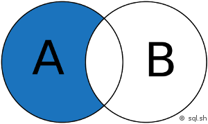
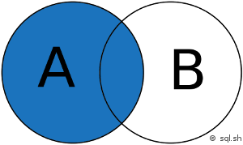
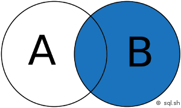
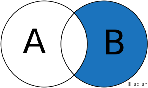

SQL avancé⚓︎
1. Les requêtes imbriquées⚓︎
On va travailler sur le schéma relationnel suivant :
CLIENT (num_cli nom_cli, prénom_cli, adr_cli, cdp_cli, vil_cli, tel_cli)
ARTICLE (num_art, des_art, prx_art, poids_art, coul_art)
COMMANDE (num_com, dat_com, #num_cli, #num_ven)
VENDEUR (num_ven, nom_ven, prénom_ven, sal_ven, vil_ven)
DETAIL (#num_com, #num_art, qte_com)
1.1 Le problème avec les interrogations simples⚓︎
Avec des requêtes simples, on ne peut répondre à tous les besoins d'interrogation.
 : Quel est la désignation de l'article le plus cher ?
: Quel est la désignation de l'article le plus cher ?
: Comparer des enregistrements entre eux: liste des articles qui sont plus lourd que l'article n°8.
- Difficile de s’interroger notamment sur ce qui n’existe pas

- Difficile de s’interroger sur l'existence d'enregistrement vérifiant des conditions qu'on ne peut formuler avec le prédicat WHERE (ex : client qui n'achète rien).
- Difficile de s’interroger sur des critères exprimés par des opérateurs ensemblistes (intersection Vendeur qui ont traité avec le client C01 et C02)
Usage des requêtes imbriquées
- Comparaison à une valeur ou une liste de valeurs
- Gérer des négations
- Renforcer les opérateurs de comparaisons
- Remplacer les jointures internes
1.2 Comparaison à une valeur ou une liste de valeurs⚓︎
1.2.1 Comparaison à une valeur⚓︎
On souhaite comparer une colonne à une valeur variable, contenue dans une table.
: Liste des articles dont le poids est supérieur au poids de l’article 2
On utilise les opérateurs de comparaison (> < = <>) à une seule valeur donc la requête imbriquée ne doit ramener qu’une seule valeur.
SELECT num_art, poids_art
FROM ARTICLE
WHERE poids_art < poids_article_2;
/* or on sait calculer le poids de l'article 2 */
SELECT poids_art
FROM ARTICLE
WHERE num_art=2;
Ordre SQL pour notre exemple :
SELECT num_art, poids_art
FROM ARTICLE
WHERE poids_art < (SELECT poids_art
FROM ARTICLE
WHERE num_art=2);
1.2.1 Comparaison à une liste de valeurs⚓︎
Si la requête SQL peut ramener une liste de valeurs, on utilise l’opérateur IN ou NOT IN.
Les requêtes imbriquées sont basées sur le mot-clé IN qui permet de sélectionner des enregistrements parmi une liste.
Le principe consiste à construire une sous-requête qui donne un résultat équivalent à une liste. Ensuite la requête principale permet de sélectionner des lignes dans la liste précédemment construite.
: Liste des vendeurs qui ont traité avec le client 'C01'
SELECT Nom_Ven, Prénom_Ven
FROM VENDEUR
WHERE Num_Ven IN (SELECT DISTINCT Num_Ven
FROM COMMANDE
WHERE Num_Cli = 'C01');
SELECT Nom_Ven, Prénom_Ven
FROM VENDEUR, COMMANDE
WHERE VENDEUR.Num_Ven = COMMANDE.Num_Ven
AND Num_Cli='CO1';
 Il n'y a pas d'équivalent pour les besoins exprimé à la forme négative.
Il n'y a pas d'équivalent pour les besoins exprimé à la forme négative.
: Liste des vendeurs qui n'ont pas traité avec le client 'C01'
SELECT Nom_Ven, Prénom_Ven
FROM VENDEUR
WHERE Num_Ven NOT IN (SELECT DISTINCT Num_Ven
FROM COMMANDE
WHERE Num_Cli = 'C01');
1.2.3 Syntaxe⚓︎
On ramène la valeur de la variable par un ordre SQL. Le résultat de cet ordre SQL est utilisé dans la condition comme si c’était une variable. L’ordre SQL est le suivant :
SELECT Liste attributs
FROM Liste des tables
WHERE testée opérateur (ordre SELECT)
GROUP BY liste de colonnes de regroupement
HAVING colonne testée (ordre SELECT) ;

GROUP BY et HAVING sont possibles dans une requête imbriquée mais ORDER BY est impossible.
1.3 Opérateurs de comparaison modifiés par ANY ou ALL⚓︎
Les opérateurs de comparaison peuvent voir leur comportement modifié par les mots-clés ANY ou ALL. Ceux-ci s’utilisent généralement avec une liste de valeurs ou une liste résultat d’une sous-requête.
: Liste des articles dont le prix est supérieur au prix de tous les produits rouges
SELECT art_num
FROM ARTICLE
WHERE art_prix > ALL (SELECT art_prix
FROM ARTICLE
WHERE art_coul = ‘ROUGE’);
| Opérateur | Equivalent | ||
|---|---|---|---|
| > | ANY | > à au moins une valeur | > MIN |
| < | ANY | < à au moins une valeur | < MAX |
| = | ANY | = à une valeur de la liste | IN |
| <> | ANY | <> d’au moins une valeur de la liste |
| Opérateur | Equivalent | ||
|---|---|---|---|
| > | ALL | > à toutes les valeurs | > MAX |
| < | ALL | < à toutes les valeurs | < MIN |
| <> | ALL | <> de toutes les valeurs de la liste | NOT IN |
Rq: L'utilisation de ALL et ANY est subtil et peut engendrer des erreurs. On préférera des requêtes utilisant des fonctions de groupes.
1.4 Application⚓︎
1. Nom et prénom des clients qui habitent la même ville que le client 'C15'
correction
SELECT nom_cli, prénom_cli
FROM CLIENT
WHERE vil_cli = (SELECT vil_cli
FROM CLIENT
WHERE num_cli = 'C15')
2. Liste des clients qui n'ont rien commandé
correction
SELECT nom_cli, prénom_cli
FROM CLIENT
WHERE num_cli NOT IN (SELECT num_cli
FROM COMMANDE);
3. Liste des commandes qui n’ont pas d’articles jaunes
correction
SELECT *
FROM COMMANDE
WHERE num_com NOT IN (SELECT num_com
FROM COMMANDE
INNER JOIN DETAIL
ON COMMANDE.Num_Com = DETAIL.Num_Com
INNER JOIN ARTICLE
ON DETAIL.num_art = ARTICLE.Num_Art
WHERE coul_art = ‘jaune’);
 REQUETE IMBRIQUEES FONCTION
REQUETE IMBRIQUEES FONCTION
4. Désignation de l'article le plus cher. Comment réagit votre requête si deux articles ont tous les deux le prix le plus élevé ?
correction
SELECT des_art
FROM ARTICLE
WHERE Prx_Art = (SELECT MAX(Prx_Art)
FROM Article);
5. Nom et prénom du client qui a passé la dernière commande
correction
SELECT nom_cli, prénom_cli
FROM CLIENT
INNER JOIN COMMANDE
ON COMMANDE.num_cli = CLIENT.num_cli
WHERE dat_com = (SELECT MAX(dat_com)
FROM COMMANDE);
6. Liste des articles dont le prix est supérieur à la moyenne des prix des articles rouges
correction
SELECT des_art
FROM ARTICLE
WHERE Prx_Art > (SELECT AVG(Prx_Art)
FROM Article
WHERE coul_art = ‘rouge ‘) ;
7. Liste des vendeurs dont le salaire est supérieur à ceux des vendeurs de Paris.
correction
SELECT nom_ven, prénom_ven
FROM VENDEUR
WHERE sal_ven > (SELECT MAX(sal_ven)
FROM VENDEUR
WHERE vil_ven ='Paris');
REQUETE IMBRIQUEES HAVING
8. Nom des villes dont la moyenne des salaires pour leurs vendeurs est supérieure à la moyenne des salaires de tous les vendeurs
correction
SELECT vil_ven
FROM VENDEUR
GROUP BY vil_ven
HAVING AVG(sal_ven) > (SELECT AVG (sal_ven)
FROM VENDEUR);
9. Liste des articles de même couleur que celle du no 10 et dont le poids est supérieur ou égal au poids moyen de tous les articles
correction
SELECT des_art
FROM ARTICLE
WHERE coul_art IN (SELECT coul_art
FROM ARTICLE
WHERE Num_Art = 10
AND poids_art > (SELECT AVG(poids_art
FROM ARTICLE);
2. Opérateurs ensemblistes⚓︎
Ils sont au nombre de 3 :
-
UNION : Cet opérateur permet de combiner les résultats de deux requêtes SELECT en éliminant les doublons. Si vous souhaitez conserver les doublons, vous pouvez utiliser
UNION ALL. -
INTERSECT : Cet opérateur retourne les lignes communes aux résultats de deux requêtes
SELECT. Notez queINTERSECTn’est pas implémenté dans tous les systèmes de gestion de bases de données (SGBD). -
EXCEPT : Aussi connu sous le nom de
MINUSdans certains SGBD, cet opérateur retourne les lignes présentes dans la première requêteSELECTmais pas dans la seconde.
Point important
- Colonnes correspondantes : Les deux requêtes doivent sélectionner le même nombre de colonnes, et ces colonnes doivent être de types compatibles.
- Ordre des colonnes : L’ordre des colonnes dans les deux requêtes doit être le même.
- Élimination des doublons : Comme avec
UNION, l’opérateurINTERSECTélimine automatiquement les doublons dans le résultat final.
2.1 Intersection⚓︎
 Identifie les enregistrements communs entre deux ensembles de données
Identifie les enregistrements communs entre deux ensembles de données
Liste des vendeurs qui ont travaillé avec les clients C01 et C02
SELECT nom_ven, prénom_ven
FROM VENDEUR
INNER JOIN COMMANDE
ON VENDEUR.num_ven = COMMANDE.num_ven
WHERE num_cli = 'CO1'
INTERSECT
SELECT nom_ven, prénom_ven
FROM VENDEUR
INNER JOIN COMMANDE
ON VENDEUR.num_ven = COMMANDE.num_ven
WHERE num_cli = 'CO2' ;
MySQL ne propose malheureusement pas cette commande SQL, heureusement le fonctionnement de cette requête peut-être simulé grâce à une petite astuce. L'emploi d'une requête imbriquée avec IN comme ci-dessous est l’alternative à INTERSECT :
SELECT nom_ven, prénom_ven
FROM VENDEUR
INNER JOIN COMMANDE
ON VENDEUR.num_ven = COMMANDE.num_ven
WHERE num_cli = 'CO1'
AND VENDEUR.num_ven IN (SELECT VENDEUR.num_ven
FROM VENDEUR
INNER JOIN COMMANDE
ON VENDEUR.num_ven = COMMANDE.num_ven
WHERE num_cli = 'CO2') ;
2.2 UNION⚓︎
combine les résultats de plusieurs requêtes SELECT en éliminant les doublons

Liste des vendeurs qui ont travaillé avec les clients C01 ou C02
SELECT nom_ven, prénom_ven
FROM VENDEUR
INNER JOIN COMMANDE
ON VENDEUR.num_ven = COMMANDE.num_ven
WHERE num_cli = 'CO1'
UNION
SELECT nom_ven, prénom_ven
FROM VENDEUR
INNER JOIN COMMANDE
ON VENDEUR.num_ven = COMMANDE.num_ven
WHERE num_cli = 'CO2' ;
Attention
doivent correspondre dans les 2 ordres SELECT:
- le nombre de colonnes affichées
- ET le type des données
Une équivalence :
SELECT nom_ven, prénom_ven
FROM VENDEUR
INNER JOIN COMMANDE
ON VENDEUR.num_ven = COMMANDE.num_ven
WHERE (num_cli = 'CO1'
OR num_cli = 'C02');
2.3 Différence⚓︎
L’opérateur EXCEPT (ou MINUS dans certains systèmes de gestion de bases de données) est utilisé pour retourner les lignes présentes dans le résultat de la première requête SELECT mais pas dans le résultat de la seconde. C’est un moyen efficace de trouver des différences entre deux ensembles de données.

Liste des vendeurs qui ont travaillé avec le client C01 mais pas avec C02
SELECT nom_ven, prénom_ven
FROM VENDEUR
INNER JOIN COMMANDE
ON VENDEUR.num_ven = COMMANDE.num_ven
WHERE num_cli = 'CO1'
EXCEPT
SELECT nom_ven, prénom_ven
FROM VENDEUR
INNER JOIN COMMANDE
ON VENDEUR.num_ven = COMMANDE.num_ven
WHERE num_cli = 'CO2' ;
Une équivalence :
SELECT nom_ven, prénom_ven
FROM VENDEUR
INNER JOIN COMMANDE
ON VENDEUR.num_ven = COMMANDE.num_ven
WHERE num_cli = 'CO1'
AND VENDEUR.num_ven NOT IN (SELECT VENDEUR.num_ven
FROM VENDEUR
INNER JOIN COMMANDE
ON VENDEUR.num_ven = COMMANDE.num_ven
WHERE num_cli = 'CO2') ;
2.4 Application⚓︎
Pour rappel, on travaille sur le schéma relationnel suivant :
CLIENT (num_cli nom_cli, prénom_cli, adr_cli, cdp_cli, vil_cli, tel_cli)
ARTICLE (num_art, des_art, prx_art, poids_art, coul_art)
COMMANDE (num_com, dat_com, #num_cli, #num_ven)
VENDEUR (num_ven, nom_ven, prénom_ven, sal_ven, vil_ven)
DETAIL (#num_com, #num_art, qte_com)
10. Liste des clients qui ont acheté quelque chose et qui habitent Redon.
correction
SELECT num_cli, nom_cli, prénom_cli
FROM CLIENT, COMMANDE
WHERE CLIENT.num_cli = COMMANDE.num_cli
INTERSECT
SELECT num_cli, nom_cli, prénom_cli
FROM CLIENT
WHERE Vil_Cli = "Redon";
/* Autre solution */
SELECT num_cli, nom_cli, prénom_cli
FROM CLIENT INNER JOIN COMMANDE
ON CLIENT.num_cli = COMMANDE.num_cli
AND num_cli IN (SELECT num_cli,
FROM CLIENT
WHERE Vil_Cli = "Redon");
11. Liste des articles de couleur verte ou figurant sur la commande numéro 28.
correction
SELECT num_art, des_art
FROM ARTICLE
WHERE coul_art = "Verte"
UNION
SELECT ARTICLE.num_art, des_art
FROM ARTICLE INNER JOIN DETAIL
ON ARTICLE.Num_Art = DETAIL.Num_Art
INNER JOIN COMMANDE
ON DETAIL.Num_Com = COMMANDE.Num_Com
WHERE COMMANDE.Num_Com = '28';
12. Liste des articles vendus au moins une fois sauf ceux de couleur rouge.
correction
```SQL
SELECT num_art, des_art
FROM ARTICLE INNER JOIN DETAIL
ON ARTICLE.Num_Art = DETAIL.Num_Art
EXCEPT
SELECT num_art, des_art
FROM ARTICLE
WHERE Art_Coul = "Rouge";
/*Autre solution*/
SELECT A.num_art, des_art
FROM ARTICLE A INNER JOIN DETAIL
ON A.Num_Art = DETAIL.Num_Art
WHERE NOT EXISTS
(SELECT num_art
FROM ARTICLE B
WHERE Coul_art = 'Rouge' ;
```
3. Les vues⚓︎
3.1 Définition⚓︎
Une vue peut être considérée comme une **table virtuelle**construite à partir de l’exécution d’une requête d’interrogation SELECT.
Elle n’a pas d’existence physique permanente et est construite dynamiquement.
Utilisation
- Mémoriser une requête longue et souvent utilisée
- Simplifier l’écriture d’une requête complexe
- Cacher certaines colonnes d’une table
Pour l’utilisateur, la vue se présente comme n’importe quelle autre table qui dans certains cas pourra même être mise à jour.
Exemple : Dans le cas des emprunts de la bibliothèque, l’application cliente aura certainement besoin – à plusieurs reprises - d’afficher la liste des emprunts suivant des critères différents :
- Emprunts non régularisés
- Emprunts réalisés par un lecteur
- Emprunts d’un ouvrage
- Emprunts du mois courant - Etc…
Pour un résultat plus lisible, on imagine sans mal que le titre de l’ouvrage ainsi que le nom du lecteur devront être affichés. Pour éviter de répéter les jointures à chaque requête, on définira la vue suivante:
CREATE VIEW v_emprunt_detail AS
SELECT L.NumLecteur, NomLecteur, O.NumOuvrage, TitreOuvrage,
DateEmprunt, DateRetour
FROM Lecteur L INNER JOIN Emprunter E ON L.NumLecteur = E.NumLecteur
INNER JOIN Ouvrage O ON E.NumOuvrage = O.NumOuvrage
note : Par convention le nom des vues est généralement préfixé par v_
Sous phpMyAdmin, la vue apparaît dans la liste des tables avec une icône différente :
Les requêtes seront ainsi simplifiées :
Emprunts non régularisés :
Select NumLecteur, NumOuvrage
From v_emprunt_detail
Where DateRetour Is Null;
Select DateEmprunt, DateRetour, TitreOuvrage
From v_emprunt_detail
Order By DateEmprunt Desc;
3.2 Mise à jour d’une vue⚓︎
Si une vue ne retourne pas de champs provenant de plusieurs tables (jointure), elle peut être modifiée.
Exemple : Création d’une vue qui contient les ouvrages répertoriés dans le genre n°5 intitulé « Réseau »
CREATE VIEW v_ouvrage_reseau AS
Select TitreOuvrage, AnneeParution, O.NumGenre
From Ouvrage O Inner Join Genre G On O.NumGenre = G.NumGenre
Where O.NumGenre = 5;
Insert v_ouvrage_reseau (TitreOuvrage, AnneeParution, NumGenre)
Values ("TCP/IP pour les nuls", 2001, 5);
O.NumGenre.
3.3 Les alternatives aux vues⚓︎
Il existe plusieurs alternatives aux vues en SQL pour gérer et manipuler les données de manière efficace. Voici quelques-unes des principales alternatives :
Tables temporaires
Les tables temporaires sont des tables créées pour stocker des données temporairement pendant la durée d'une session ou d'une transaction. Elles sont utiles pour stocker des résultats intermédiaires sans affecter les tables permanentes.
CREATE TEMPORARY TABLE TempTable AS
SELECT * FROM SomeTable WHERE condition;
Common Table Expressions (CTE)
Les CTE sont des expressions de table communes qui permettent de définir des tables temporaires dans le cadre d'une requête. Elles sont particulièrement utiles pour les requêtes récursives et les requêtes complexes.
WITH CTE AS (
SELECT colonne1, colonne2 FROM Table1 WHERE condition
)
SELECT * FROM CTE;
Procédures stockées
Les procédures stockées sont des ensembles de requêtes SQL précompilées qui peuvent être exécutées comme une seule unité. Elles permettent de réutiliser des blocs de code SQL et d'améliorer la performance en réduisant le trafic réseau.
CREATE PROCEDURE ExampleProcedure AS
BEGIN
SELECT * FROM Table1 WHERE condition;
END;
Fonctions définies par l'utilisateur (UDF)
Les UDF sont des fonctions personnalisées créées par l'utilisateur pour encapsuler des logiques SQL complexes. Elles peuvent être utilisées dans des requêtes pour effectuer des calculs ou des transformations spécifiques.
CREATE FUNCTION ExampleFunction (@param INT)
RETURNS INT
AS
BEGIN
RETURN (SELECT colonne FROM Table WHERE condition = @param);
END;
Indexation
L'utilisation d'index appropriés sur les tables peut améliorer les performances des requêtes sans avoir besoin de vues. Les index permettent un accès plus rapide aux données en créant des structures de données supplémentaires.
CREATE INDEX idx_colonne1 ON Table1 (colonne1);
Conclusion
Chaque alternative a ses propres avantages et inconvénients en fonction du contexte et des besoins spécifiques. Il est important de choisir la solution la plus adaptée en fonction des performances, de la complexité et des exigences de sécurité.
4. Histoire de jointures⚓︎
Les jointures en SQL permettent d’associer plusieurs tables dans une même requête. Cela permet d’exploiter la puissance des bases de données relationnelles pour obtenir des résultats qui combinent les données de plusieurs tables de manière efficace.
4.1 Exemple⚓︎
En général, les jointures consistent à associer des lignes de 2 tables en associant l’égalité des valeurs d’une colonne d’une première table par rapport à la valeur d’une colonne d’une seconde table. Imaginons qu’une base de 2 données possède une table utilisateur et une autre table adresse qui contient les adresses de ces utilisateurs. Avec une jointure, il est possible d’obtenir les données de l’utilisateur et de son adresse en une seule requête.
C'est ce que vous avez l'habitude d'utiliser lorsque vous faites des INNER JOIN !
On peut aussi imaginer qu’un site web possède une table pour les articles (titre, contenu, date de publication …) et une autre pour les rédacteurs (nom, date d’inscription, date de naissance …). Avec une jointure il est possible d’effectuer une seule recherche pour afficher un article et le nom du rédacteur. Mais plus fort, une jointure permettra aussi de connaître les rédacteurs n'ayant pas rédigé d'articles (sans utiliser de requête imbriquée) !!
4.2 Types de jointures⚓︎
Il y a plusieurs méthodes pour associer 2 tables ensemble. Voici la liste des différentes techniques qui sont utilisées :
- INNER JOIN : jointure interne pour retourner les enregistrements quand la condition est vraie dans les 2 tables. C’est l’une des jointures les plus communes.
- LEFT JOIN (ou LEFT OUTER JOIN) : jointure externe pour retourner tous les enregistrements de la table de gauche (LEFT = gauche) même si la condition n’est pas vérifié dans l’autre table. Les résultats de la table de droite seront NULL s’il n’y a pas de correspondance.
- RIGHT JOIN (ou RIGHT OUTER JOIN) : jointure externe pour retourner tous les enregistrements de la table de droite (RIGHT = droite) même si la condition n’est pas vérifié dans l’autre table. Les résultats de la table de gauche seront NULL s’il n’y a pas de correspondance.
et hors programme :
- CROSS JOIN : jointure croisée permettant de faire le produit cartésien de 2 tables. En d’autres mots, permet de joindre chaque ligne d’une table avec chaque ligne d’une seconde table. Attention, le nombre de résultats est en général très élevé. (et pas toujours très cohérent …)
- FULL JOIN (ou FULL OUTER JOIN) : jointure externe pour retourner les résultats quand la condition est vrai dans au moins une des 2 tables.
- SELF JOIN : permet d’effectuer une jointure d’une table avec elle-même comme si c’était une autre table.
- NATURAL JOIN : jointure naturelle entre 2 tables s’il y a au moins une colonne qui porte le même nom entre les 2 tables SQL
- UNION JOIN : jointure d’union
4.3 Les jointures⚓︎
Rappel du schéma relationnel du contexte :
CLIENT (num_cli nom_cli, prénom_cli, adr_cli, cdp_cli, vil_cli, tel_cli)
ARTICLE (num_art, des_art, prx_art, poids_art, coul_art)
COMMANDE (num_com, dat_com, #num_cli, #num_ven)
VENDEUR (num_ven, nom_ven, prénom_ven, sal_ven, vil_ven)
DETAIL (#num_com, #num_art, qte_com)
4.3.1 INNER JOIN⚓︎
INNER JOIN retourne uniquement les lignes où il y a une correspondance dans les deux tables. Si une ligne de la table de gauche (première table) n’a pas de correspondance dans la table de droite (deuxième table), elle ne sera pas incluse dans le résultat. C'est l'intersection de 2 ensembles.
SELECT *
FROM A
INNER JOIN B ON A.key = B.key
exemple : Lister les commandes avec les détails des clients et des vendeurs
SELECT c.num_com, c.dat_com, cl.nom_cli, cl.prénom_cli, v.nom_ven, v.prénom_ven
FROM COMMANDE c
INNER JOIN CLIENT cl ON c.num_cli = cl.num_cli
INNER JOIN VENDEUR v ON c.num_ven = v.num_ven;
4.3.2 Jointure gauche (LEFT JOINT)⚓︎
LEFT JOIN (ou LEFT OUTER JOIN) retourne toutes les lignes de la table de gauche, et les lignes correspondantes de la table de droite. Si une ligne de la table de gauche n’a pas de correspondance dans la table de droite, les colonnes de la table de droite seront remplies avec des valeurs NULL.

SELECT *
FROM A
LEFT JOIN B ON A.key = B.key
LEFT JOIN (sans l’intersection de B)
SELECT cl.nom_cli, cl.prénom_cli, c.num_com, c.dat_com
FROM CLIENT cl
LEFT JOIN COMMANDE c ON cl.num_cli = c.num_cli;
SELECT *
FROM A
LEFT JOIN B ON A.key = B.key
WHERE B.key IS NULL
RIGHT JOIN
3.3 Jointure droite (RIGHT JOINT)⚓︎
La jointure droite (ou RIGHT JOIN en anglais) est un type de jointure en SQL qui retourne toutes les lignes de la table de droite, ainsi que les lignes correspondantes de la table de gauche. Si une ligne de la table de droite n’a pas de correspondance dans la table de gauche, les colonnes de la table de gauche seront remplies avec des valeurs NULL.
 Jointure droite (RIGHT JOINT)
SELECT *
FROM A
RIGHT JOIN B ON A.key = B.key
RIGHT JOIN (sans l’intersection de A)
SELECT v.nom_ven, v.prénom_ven, c.num_com, c.dat_com
FROM VENDEUR v
RIGHT JOIN COMMANDE c ON v.num_ven = c.num_ven;
Remarque :  Jointure droite (RIGHT JOINT sans l’intersection A)
SELECT *
FROM A
RIGHT JOIN B ON A.key = B.key
WHERE B.key IS NULL
Exemple Pratique
Supposons que nous ayons deux tables : CLIENT et COMMANDE.
CLIENT
| num_cli | nom_cli | prénom_cli |
|---|---|---|
| 1 | Dupont | Jean |
| 2 | Martin | Marie |
| 3 | Durand | Paul |
COMMANDE
| num_com | dat_com | num_cli |
|---|---|---|
| 101 | 2024-01-15 | 1 |
| 102 | 2024-02-20 | 2 |
| 103 | 2024-03-10 | 4 |
Pour lister toutes les commandes et les informations des clients, y compris les commandes sans client correspondant, nous utiliserons une jointure droite :
SELECT c.num_com, c.dat_com, cl.nom_cli, cl.prénom_cli
FROM CLIENT cl
RIGHT JOIN COMMANDE c ON cl.num_cli = c.num_cli;
Résultat :
| num_com | dat_com | nom_cli | prénom_cli |
|---|---|---|---|
| 101 | 2024-01-15 | Dupont | Jean |
| 102 | 2024-02-20 | Martin | Marie |
| 103 | 2024-03-10 | NULL | NULL |
Points Clés
- Toutes les lignes de la table de droite : La jointure droite retourne toutes les lignes de la table de droite (
COMMANDE), même si elles n'ont pas de correspondance dans la table de gauche (CLIENT). - Valeurs NULL : Les colonnes de la table de gauche seront NULL si aucune correspondance n'est trouvée.
Utilisation Pratique
La jointure droite est utile lorsque vous souhaitez inclure toutes les lignes de la table de droite dans le résultat, même si certaines n'ont pas de correspondance dans la table de gauche. Par exemple, pour lister toutes les commandes, y compris celles sans client correspondant.
Isomorphisme
Oui, il est tout à fait possible de transformer une jointure gauche (LEFT JOIN) en jointure droite (RIGHT JOIN) et vice versa. En fait, une jointure gauche et une jointure droite sont essentiellement la même opération, mais appliquées dans des directions opposées. Voici comment vous pouvez les transformer :
Transformation d'une Jointure Gauche en Jointure Droite⚓︎
Supposons que nous ayons la jointure gauche suivante :
SELECT cl.nom_cli, cl.prénom_cli, c.num_com, c.dat_com
FROM CLIENT cl
LEFT JOIN COMMANDE c ON cl.num_cli = c.num_cli;
Pour transformer cette jointure gauche en jointure droite, il suffit d'inverser l'ordre des tables et de changer le type de jointure :
SELECT cl.nom_cli, cl.prénom_cli, c.num_com, c.dat_com
FROM COMMANDE c
RIGHT JOIN CLIENT cl ON cl.num_cli = c.num_cli;
Transformation d'une Jointure Droite en Jointure Gauche⚓︎
De la même manière, si nous avons une jointure droite :
SELECT cl.nom_cli, cl.prénom_cli, c.num_com, c.dat_com
FROM COMMANDE c
RIGHT JOIN CLIENT cl ON cl.num_cli = c.num_cli;
Nous pouvons la transformer en jointure gauche en inversant l'ordre des tables et en changeant le type de jointure :
SELECT cl.nom_cli, cl.prénom_cli, c.num_com, c.dat_com
FROM CLIENT cl
LEFT JOIN COMMANDE c ON cl.num_cli = c.num_cli;
Exemple Pratique⚓︎
Jointure Gauche (LEFT JOIN)⚓︎
SELECT cl.nom_cli, cl.prénom_cli, c.num_com, c.dat_com
FROM CLIENT cl
LEFT JOIN COMMANDE c ON cl.num_cli = c.num_cli;
Jointure Droite (RIGHT JOIN)⚓︎
SELECT cl.nom_cli, cl.prénom_cli, c.num_com, c.dat_com
FROM COMMANDE c
RIGHT JOIN CLIENT cl ON cl.num_cli = c.num_cli;
Points Clés⚓︎
- Ordre des Tables : L'ordre des tables est inversé lorsque vous transformez une jointure gauche en jointure droite et vice versa.
- Type de Jointure : Changez le type de jointure de LEFT JOIN à RIGHT JOIN ou de RIGHT JOIN à LEFT JOIN.
Ces transformations montrent que les jointures gauche et droite sont interchangeables en ajustant simplement l'ordre des tables et le type de jointure.
4.4 Application⚓︎
1. Quels clients n'ont pas passé de commande ?
Correction
SELECT cl.nom_cli, cl.prénom_cli
FROM CLIENT cl
LEFT JOIN COMMANDE c ON cl.num_cli = c.num_cli
WHERE c.num_com IS NULL;
2. Quels articles n'ont jamais été commandés ?
Correction
SELECT a.des_art
FROM ARTICLE a
LEFT JOIN DETAIL d ON a.num_art = d.num_art
WHERE d.num_com IS NULL;
3. Combien de commandes chaque client a-t-il passées ?
Correction
SELECT cl.nom_cli, cl.prénom_cli, COUNT(c.num_com) AS nombre_commandes
FROM CLIENT cl
LEFT JOIN COMMANDE c ON cl.num_cli = c.num_cli
GROUP BY cl.nom_cli, cl.prénom_cli;
4. Quels vendeurs ont généré le plus de ventes (en termes de nombre de commandes) ?
Correction
SELECT v.nom_ven, v.prénom_ven, COUNT(c.num_com) AS nombre_ventes
FROM VENDEUR v
LEFT JOIN COMMANDE c ON v.num_ven = c.num_ven
GROUP BY v.nom_ven, v.prénom_ven
ORDER BY nombre_ventes DESC;
5. Quels articles ont été commandés en grande quantité (plus de 100 unités) ?
Correction
SELECT a.des_art, SUM(d.qte_com) AS total_quantite
FROM ARTICLE a INNER JOIN DETAIL d
ON a.num_art = d.num_art
GROUP BY a.des_art
HAVING SUM(d.qte_com) > 100;
Questions de Réflexion
6. Quels sont les avantages et les inconvénients de chaque type de jointure dans ce contexte ?
Correction
-
INNER JOIN
- Avantages :
- Retourne uniquement les lignes avec des correspondances dans les deux tables, ce qui peut réduire la quantité de données retournées et simplifier l'analyse.
- Utilisé pour des rapports où seules les correspondances sont pertinentes.
- Inconvénients :
- Ne retourne pas les lignes sans correspondance, ce qui peut entraîner la perte d'informations importantes si des données manquent dans l'une des tables.
-
LEFT JOIN
- Avantages :
- Retourne toutes les lignes de la table de gauche, même si elles n'ont pas de correspondance dans la table de droite, ce qui permet de conserver toutes les informations de la table principale.
- Utile pour des analyses où il est important de voir toutes les entrées de la table principale, même sans correspondance.
- Inconvénients :
- Peut retourner beaucoup de valeurs NULL, ce qui peut compliquer l'analyse et nécessiter un traitement supplémentaire des données.
-
RIGHT JOIN
- Avantages :
- Retourne toutes les lignes de la table de droite, même si elles n'ont pas de correspondance dans la table de gauche, ce qui permet de conserver toutes les informations de la table secondaire.
- Utile dans des scénarios spécifiques où la table de droite est la table principale d'intérêt.
- Inconvénients :
- Moins couramment utilisé que LEFT JOIN, ce qui peut rendre le code moins lisible pour d'autres développeurs.
- Peut également retourner beaucoup de valeurs NULL.
7. Comment les jointures peuvent-elles affecter les performances des requêtes dans une base de données avec un grand volume de données ?
Correction
- Complexité des Requêtes : Les jointures, en particulier les jointures multiples et les jointures externes, peuvent augmenter la complexité des requêtes, ce qui peut ralentir les performances.
- Indexation : L'absence d'index appropriés sur les colonnes utilisées dans les conditions de jointure peut entraîner des scans de table complets, ce qui est coûteux en termes de temps et de ressources.
- Taille des Tables : Les jointures sur de grandes tables peuvent générer des ensembles de résultats très volumineux, ce qui peut affecter la mémoire et le temps de traitement.
- Optimisation des Requêtes : Les SGBD modernes utilisent des optimisateurs de requêtes pour améliorer les performances des jointures, mais des requêtes mal écrites ou non optimisées peuvent toujours poser des problèmes.
- Utilisation de Vues Matérialisées : Pour améliorer les performances, surtout pour des analyses répétitives, l'utilisation de vues matérialisées peut être bénéfique, bien qu'elles nécessitent une gestion supplémentaire pour rester à jour.
8. Dans quels scénarios spécifiques utiliseriez-vous une jointure externe (LEFT, RIGHT, FULL) par rapport à une jointure interne (INNER) ?
Correction
-
LEFT JOIN :
- Lorsque vous avez besoin de toutes les lignes de la table de gauche, même si elles n'ont pas de correspondance dans la table de droite. Par exemple, pour lister tous les clients et leurs commandes, y compris ceux qui n'ont pas passé de commande.
-
RIGHT JOIN :
- Lorsque vous avez besoin de toutes les lignes de la table de droite, même si elles n'ont pas de correspondance dans la table de gauche. Par exemple, pour lister tous les vendeurs et les commandes qu'ils ont traitées, y compris ceux qui n'ont pas traité de commande.
-
INNER JOIN :
- Lorsque vous avez besoin uniquement des lignes avec des correspondances dans les deux tables. Par exemple, pour lister les commandes avec les détails des clients et des vendeurs, uniquement pour les commandes existantes.